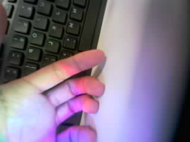
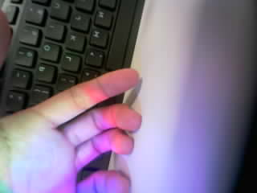
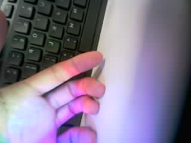

Frame 101: CONFIRMING | 28.604% changed area
Original JPEG · MeasurementsOriginal photos are unchanged. Boxes show the largest changed region against the learned empty scene. Area cutoff is recorded with each photo; confirmation: 3 frames. This is not deer recognition.

Frame 101: CONFIRMING | 28.604% changed area
Original JPEG · Measurements
Frame 102: CONFIRMING | 28.146% changed area
Original JPEG · Measurements
Frame 103: LARGE_CHANGE | 27.792% changed area
Original JPEG · MeasurementsFrame 104: CONFIRMING | 5.625% changed area
Original JPEG · MeasurementsFrame 105: CONFIRMING | 5.396% changed area
Original JPEG · MeasurementsFrame 106: LARGE_CHANGE | 5.375% changed area
Original JPEG · MeasurementsFrame 107: CONFIRMING | 5.479% changed area
Original JPEG · MeasurementsFrame 108: CONFIRMING | 5.479% changed area
Original JPEG · MeasurementsFrame 109: LARGE_CHANGE | 5.729% changed area
Original JPEG · MeasurementsFrame 110: CONFIRMING | 5.667% changed area
Original JPEG · MeasurementsFrame 111: CONFIRMING | 5.729% changed area
Original JPEG · MeasurementsFrame 112: LARGE_CHANGE | 5.792% changed area
Original JPEG · Measurements